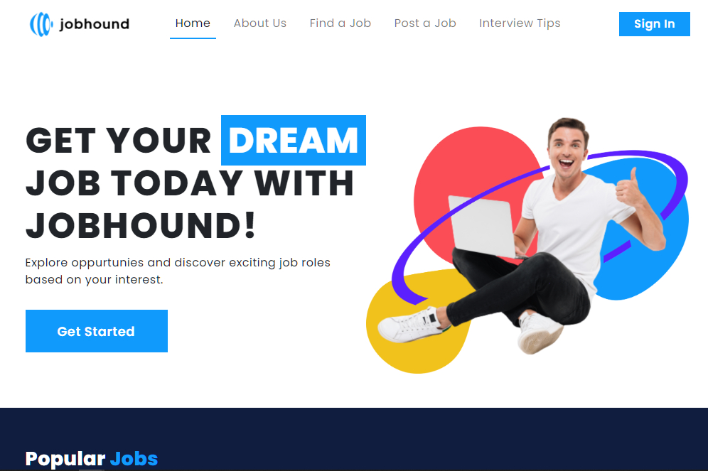

This Job Recommender System (JobHound) is designed to retrieve a list of job positions to a job applicant based on his/her preferences. Also the Applicant's have an easier way to chose what's best on the job available in such organize and specified career jobs that will also depends on the applicant's skillset.
